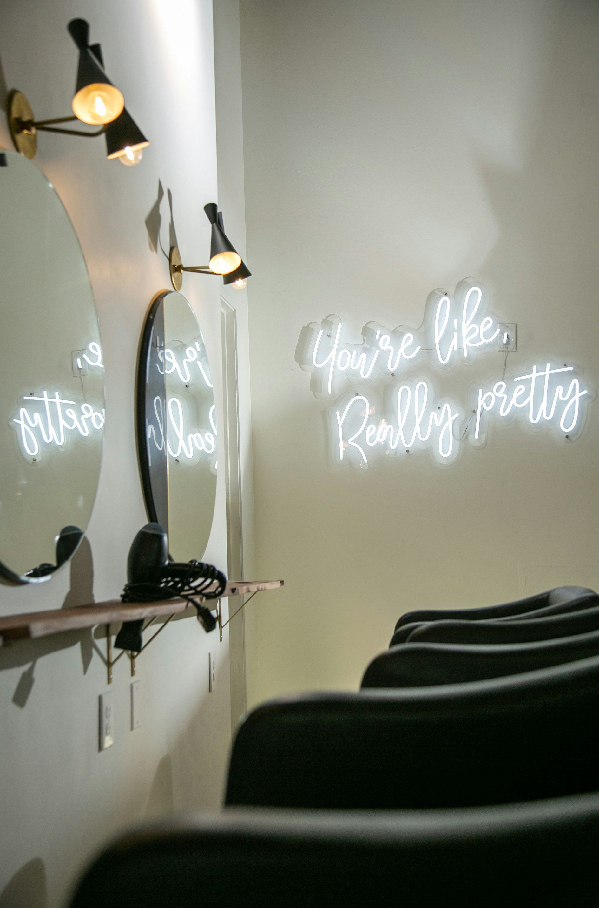
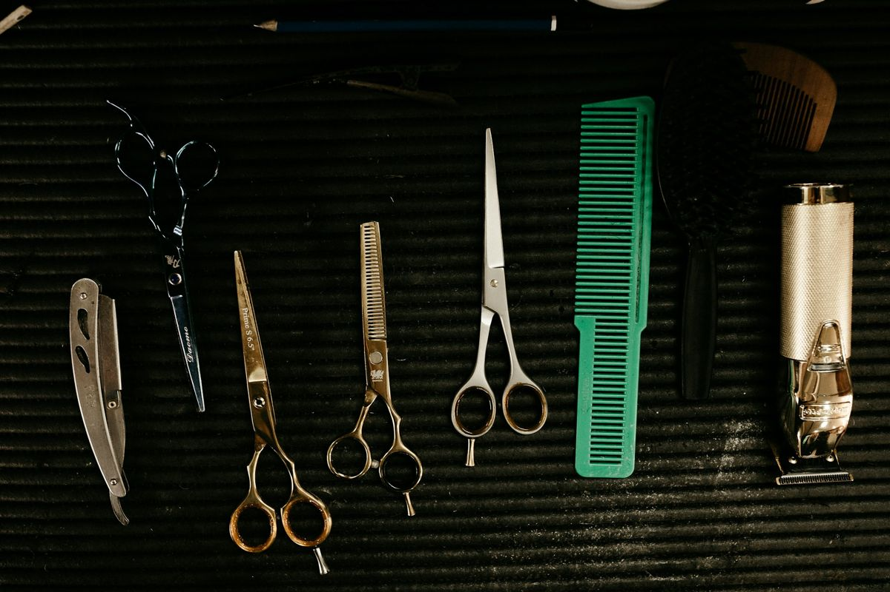

Durant's hair salon for cuts & color.
Haircuts, color and family cuts at 1417 W Live Oak St, with 138 public Google reviews behind it.
Cuts, color
and the whole family.
Services drawn from what Shear Lock Combs clients describe in public reviews. Call the salon for the current menu and pricing.

Haircuts
Haircuts in Durant, OK for women, men and kids. Reviewers say the stylists listen first and cut what you actually asked for, so you walk out of the salon on Live Oak Street with a look that fits your routine instead of fighting it.
Book a cut →
Color
Hair color at Shear Lock Combs in Durant, with test strands and realistic expectations set before the work starts, according to client reviews. Planning the color up front helps you reach your hair goals without surprises, whether you live in Durant or drive in from Bryan County.
Ask about color →
Family cuts
Regular cuts for husbands, sons and kids in Durant and around Bryan County. Booking the whole family at one salon saves trips and keeps everyone looking sharp between school, work and weekends, with stylists reviewers call friendly and patient with children.
Book the family →A Durant salon with a long public track record.
Shear Lock Combs has collected 138 public Google reviews, an unusually large number for a local salon. Clients mention stylists by name, which usually means they keep coming back to the same chair.
Call 580-745-8186 →Rating, review count and hours from Shear Lock Combs' public Google-sourced listing on exa.ai, October 2026.
Booking is simple.
Call the salon
Reach Shear Lock Combs at 580-745-8186 during open hours.
Describe the look
Tell your stylist what you want; color clients may get a test strand.
Sit back
Come in at your time and let the team take care of the rest.
What Durant clients say
Toshia and Buffy are very nice. They both really listen to you and do great evaluations. Toshia has been awesome in helping me with my hair goals! Very affordable services.
Google review, Mar 23, 2023, via exa.ai place listing (Google-sourced)
My husband and two boys get their hair cut here regularly. I love all the stylists here. They’re incredibly friendly. The salon is always clean and welcoming. We’ve never had a bad experience!
Google review, Oct 23, 2020 (excerpt), via exa.ai place listing (Google-sourced)
Wonderful experience. I move regularly and dread finding new stylists, this was a refreshing find.
Google review, Jun 12, 2020 (excerpt), via exa.ai place listing (Google-sourced)
Visit us on Live Oak Street.
1417 W Live Oak St, Durant, OK 74701
| Monday | Closed |
| Tuesday – Friday | 9 AM – 6 PM |
| Saturday | 9 AM – 3 PM |
| Sunday | Closed |
Questions from Durant clients
Where is Shear Lock Combs?
Shear Lock Combs is at 1417 W Live Oak St, Durant, OK 74701.
What are the salon's hours?
Per its public listing: Tuesday through Friday 9 AM to 6 PM and Saturday 9 AM to 3 PM. Closed Sunday and Monday. Call to confirm holidays.
Do you cut kids' and men's hair?
Yes. Public reviews mention regular cuts for husbands and young sons. Call 580-745-8186 to book a family visit.